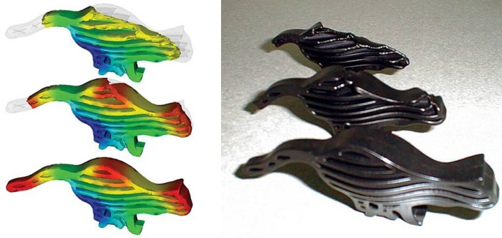
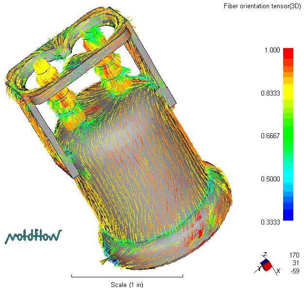
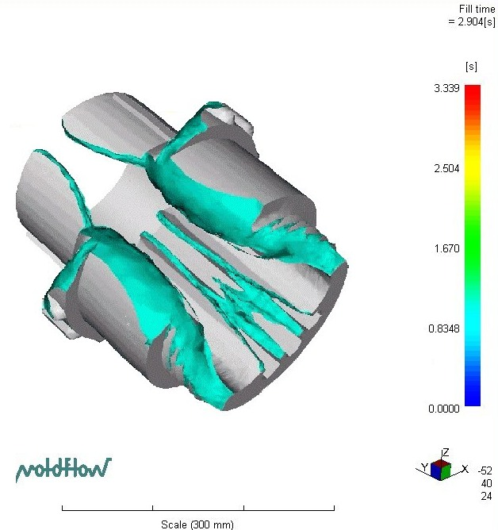
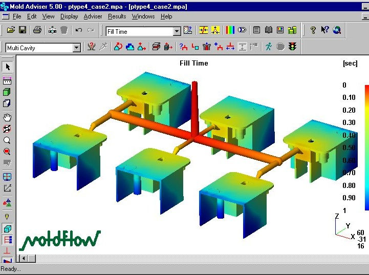
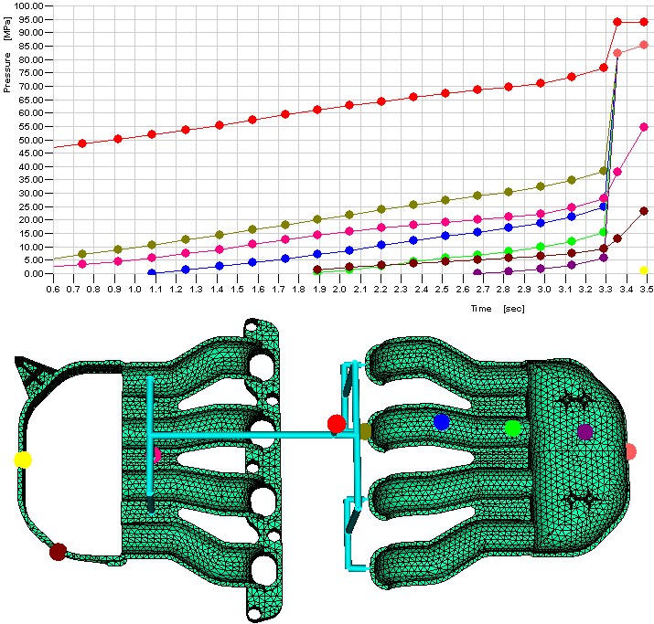
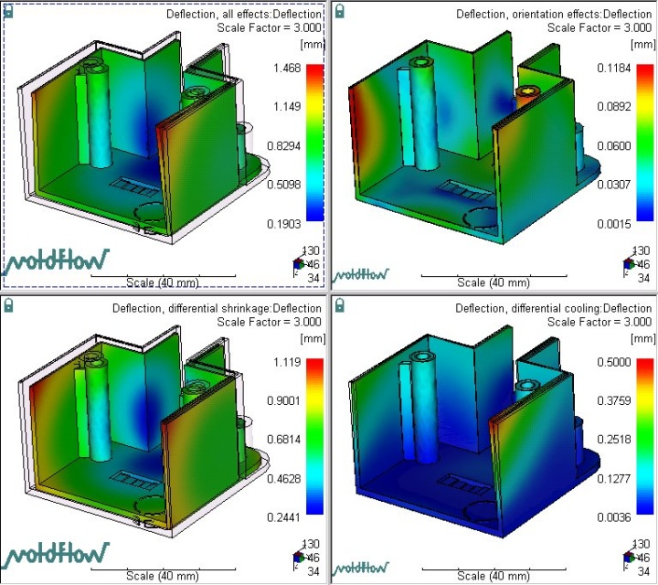

Ahmet Barýþ Kuldaþlý
CAD/CAM/CAE Mühendisi
UMTAÞ A.Þ.
Kasým 2005, Ýstanbul
Not: Ýlk defa TurkCADCAM.net Dergisi 1. sayýsýnda (Ocak-Þubat 2006) yer alan bu makale, Aralýk 2008'de yüksek çözünürlüklü resimlerle birlikte TurkCADCAM.net Portalý'nda yayýnlanmaya baþlamýþtýr.
Giriþ:
Plastik enjeksiyon analiz ve simülasyon programlarý ile plastik parça imalatýnda oluþabilecek hatalarý tespit etmek ve bu hatalarý gidermek için önlemler almak mümkündür.
Parça tasarýmý sýrasýnda analiz programlarýnýn kullanýmý imalat aþamasýna geçildiðinde çýkabilecek sorunlarýn ortadan kalkmasýný saðlar. Tespit edilebilecek bu hatalarýn büyük bir çoðunluðu hacimsel kökenlidir ve parça tasarýmýnda küçük deðiþiklikler yapýlarak giderilebilir.
Parça tasarýmý kadar tasarlanan parçanýn hangi malzemeden imal edileceðine karar vermek, mevcut geometri için en uygun malzemenin hangisi olduðunu belirlemek de imalat kalitesi için en önemli parametrelerden bir tanesidir.
Günümüzde kullanýlan mühendislik ve analiz programlarý bize malzeme karþýlaþtýrmalarý için çeþitli araçlar sunmaktadýr. Yukarýdaki þekilde Moldflow programý içerisindeki malzeme karþýlaþtýrma aracý görülmektedir. Ýçerisindeki malzeme bilgilerinin hepsi deneysel çalýþmalar sonucunda program kütüphanesindeki veri tabanýna girilmekte ve sizin seçmiþ olduðunuz malzemelerden hangisinin parçanýz için en uygun malzeme olduðunu size bir rapor olarak sunmaktadýr.
Tasarlanan parçanýn malzeme, baský þartlarý gibi imalat bilgileri de analiz ortamýna dahil edildiðinde parçanýn imalatý simüle edilebilir ve oluþacak hatalar daha ilk baský yapýlmadan görülebilir ve önlem alýnabilir.

Þekil 1: Dolum aþamalarý
Yukarýdaki þekilde Moldflow programýnda yapýlmýþ bir analiz ile plastik bir parçanýn dolum aþamalarý görülmektedir. Þekilden de anlaþýlabileceði gibi analiz programýna doðru veriler girildiðinde plastik enjeksiyon iþlemi birebir simüle edilebilen bir iþlemdir.
Analiz programlarý sayesinde imalat sýrasýnda oluþmasý muhtemel hatalar önceden belirlenebilirler. Plastik enjeksiyon iþlemi sýrasýnda plastik parçada oluþabilecek problemlerin genel sebepleri parçanýn hacim daðýlýmý, buna baðlýk olarak da akýþkan plastik malzemenin bu hacim içerisindeki hareketinin karakteri ile ilgilidir. Kalýp içerisindeki boþlukta eriðin akýþýnýn simüle edilmesi birçok hata hakkýnda fikir verebilir. Oluþacak çarpýlmalar ve fiber katkýlý malzemelerdeki mukavemet dengesizlikleri konusunda da malzeme hareketini önceden görebilmek bizim için çok önemlidir.

Þekil 2: Fiber yönlenmesi
Parça içerisindeki akýþ hareketini görmek bize kalýp boþluðuna plastik giriþini doðru nokta ya da noktalardan verip vermediðimizi anlamak için fýrsat verecektir. Tabi ki sadece malzemenin kalýp içerisindeki yönlenmelerini görmek bizim için yeterli deðildir.

Þekil 3: Dolum iþlemi
Plastik parçanýn baský sonundaki tahmini kalitesini görmek de kalýplama iþlemini doðru þartlarda yapýp yapmadýðýmýzý anlamamýz için önemli bir parametredir. Bu tip bir aracý iki yönlü kullanabiliriz. Parça kalitesine bakarak proses þartlarýmýzý tekrar gözden geçirip en iyiyi yakalamaya çalýþabiliriz veya parça kalite farklýlýðýný bölgesel olarak takip edebildiðimiz için problemli bölgeler az ya da önemsiz ise yok sayýp mevcut durumu kabul edebilir ve imalata geçebiliriz.

Þekil 4: Yolluklarýn dengelenmesi
En önemli problemlerden bir tanesi de aile kalýplarýnda ve çok gözlü kalýplarda yolluklarýn tasarýmýnýn yapýlmasýdýr. Saðlýklý bir baský yapýlabilmesi için plastik malzemenin kalýp boþluðu içerisinde dengeli bir þekilde yol almasý ve kalýp boþluðunun her noktasýndaki dolum iþleminin ayný anda sonlanmasý gerekmektedir. Eðer kalýp boþluðu içerisinde dengesiz dolum gerçekleþir ise yapýlmaya çalýþýlacak ilk müdahale enjeksiyon basýncýný arttýrarak plastiðin boþluðu tam doldurmasýný saðlamak olacak, bu da gerekli kapama kuvveti ihtiyacýný arttýracaktýr. Bu yöntem sonunda ya çapaklý parça oluþacak ya da gereksiz derecede büyük makinelerde baský yapýlmasý gerekecektir.
Bunu önlemek için basit bir analiz iþlemi ile optimum yolluk boyutlarýný tespit etmek yeterlidir. Yolluk çaplarýnda yapýlacak ufak deðiþiklikler ile plastik akýþý dengelenebilir ve dengeli bir plastik akýþý sayesinde düzgün dolum gerçekleþir.

Þekil 5: Dolum verileri
Plastik dolum iþlemi sýrasýnda yukarýdaki þekilde de görüldüðü gibi kalýp içerisindeki farklý noktalardan veri almak ve bunlarý grafik olarak elde etmek mümkündür. Bu da bize dolum esnasýndaki plastik hareketi ile ilgili daha detaylý bilgi edinme fýrsatý verir.

Þekil 6: Çarpýlma
Plastik parçalardaki en önemli sorunlardan bir tanesi de çarpýlmadýr. Analiz programlarý sayesinde çarpýlma oluþacak bölgeleri, çarpýlma miktarýný ve daha da önemlisi çarpýlmanýn sebeplerini ve hangi sebebin en fazla etkili olduðunu kalýbý oluþturmadan önce öðrenebilir ve tasarýmýmýzý bu yönde þekillendirebiliriz. Çarpýlmalarýn sebebi dengesiz soðuma, fiber yönlenmeleri, geometrik problemler vb. olabilir. Bunlarýn çarpýlmaya etki oranlarýný ne kadar net görürsek problemi çözmek de o kadar kolaylaþacaktýr.
|